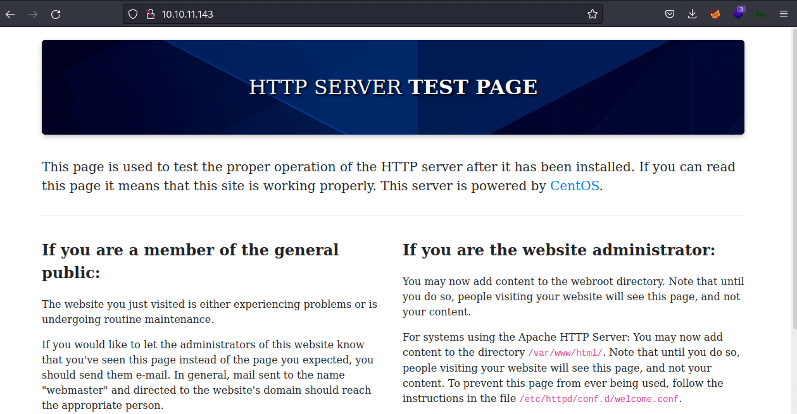
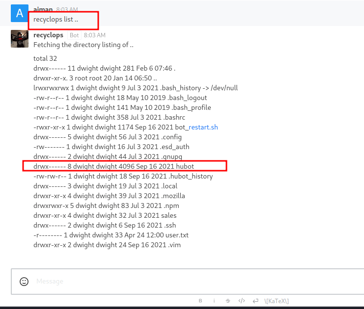
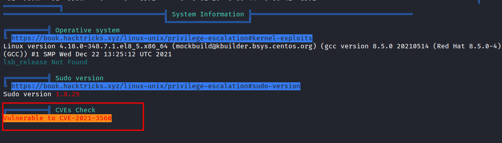

HackTheBox - Paper Writeup
Table of Contents
Nmap
Let’s scan the IP Address first by using Nmap.
# Nmap 7.92 scan initiated Wed Feb 9 07:45:26 2022 as: nmap -sC -sV -oN nmap/paper 10.129.156.206
Nmap scan report for 10.129.156.206
Host is up (0.23s latency).
Not shown: 997 closed tcp ports (reset)
PORT STATE SERVICE VERSION
22/tcp open ssh OpenSSH 8.0 (protocol 2.0)
| ssh-hostkey:
| 2048 10:05:ea:50:56:a6:00:cb:1c:9c:93:df:5f:83:e0:64 (RSA)
| 256 58:8c:82:1c:c6:63:2a:83:87:5c:2f:2b:4f:4d:c3:79 (ECDSA)
|_ 256 31:78:af:d1:3b:c4:2e:9d:60:4e:eb:5d:03:ec:a0:22 (ED25519)
80/tcp open http Apache httpd 2.4.37 ((centos) OpenSSL/1.1.1k mod_fcgid/2.3.9)
|_http-generator: HTML Tidy for HTML5 for Linux version 5.7.28
| http-methods:
|_ Potentially risky methods: TRACE
|_http-title: HTTP Server Test Page powered by CentOS
|_http-server-header: Apache/2.4.37 (centos) OpenSSL/1.1.1k mod_fcgid/2.3.9
443/tcp open ssl/http Apache httpd 2.4.37 ((centos) OpenSSL/1.1.1k mod_fcgid/2.3.9)
|_ssl-date: TLS randomness does not represent time
| http-methods:
|_ Potentially risky methods: TRACE
|_http-generator: HTML Tidy for HTML5 for Linux version 5.7.28
|_http-title: HTTP Server Test Page powered by CentOS
| ssl-cert: Subject: commonName=localhost.localdomain/organizationName=Unspecified/countryName=US
| Subject Alternative Name: DNS:localhost.localdomain
| Not valid before: 2021-07-03T08:52:34
|_Not valid after: 2022-07-08T10:32:34
|_http-server-header: Apache/2.4.37 (centos) OpenSSL/1.1.1k mod_fcgid/2.3.9
| tls-alpn:
|_ http/1.1
Service detection performed. Please report any incorrect results at https://nmap.org/submit/ .
# Nmap done at Wed Feb 9 07:45:54 2022 -- 1 IP address (1 host up) scanned in 27.74 seconds
Only 3 open ports
Http/HttpS
From the Nmap scan result above, the port 80,443 is open. So, like a normal human being. I’m navigating through it using a web browser :)

Well, that’s not what I expected. It shows the default page after installation in CentOS.
Gobuster
When I found a webpage, the first thing I’ll do is run the gobuster to find any hidden directory. Unfortunately, I can’t find anything useful.
Header: X-Backend-Server
To be honest, I’m stuck and don’t know what to do. Then, I remember that I didn’t even check the header. I’m going to check it using the curl command. OH WOW! the X-Backend-Server just exposes the hostname called office.paper. So, I’ll add the hostname into the /etc/hosts file.
Http: office.paper
Then, I navigate to http://office.paper. Turns out, it’s a blog. Down to the footer, it says Proudly Powered by WordPress and this indicates it’s using WordPress as CMS.
The first thing I’ll do is start messing around with it. However, one comment sticks out. It says something about drafts is not secure and should be deleted ASAP.
CVE-2019-17671
As the comment above shown. The drafts section is not secure. So, with this information. I’m searching on the net about it and found this article with PoC and it got assigned as CVE-2019-17671.
CVE description: In WordPress before 5.2.4, unauthenticated viewing of certain content is possible because the static query property is mishandled.
So, I’ll try to read the secret draft with this URL http://office.paper/?static=1 and it’s successfully retrieved. After I read it, I found the secret registration URL that leads into the chat subdomain. Like always, I’ll add it into the /etc/hosts file.
Http: chat.office.paper
I’m copying and pasting the URL in my web browser and being greeted by rocket.chat registration page. Well, I’m registering a new account and taking a look inside it. Turns out, it’s just a chat app and I can’t find anything useful. However, it’s has a bot called recyclops that can be interacted with.
Recyclops
To interact with the bot, first, click the bot's profile and click the direct message button. So, I’ll try the help command first. There is some interesting stuff this bot can do. However, I’m interested in the Files and List commands.

Recyclops: path traversal
To invoke the list command, type recyclops list. It’s just giving me a listing of the /sales/ directory. However, this makes me wonder, can I make it list another directory as path traversal the answer is YES!. Here’s the command that I put in, recyclops list ..

Hubot
There is a .ssh directory present and the Nmap scan shows, that this machine has port 22 open. Unfortunately, there’s nothing in that directory. On top of that, I found the directory called hubot. It’s a robot for a chat room. So, I assumed recyclops are based on hubot.
Hubot: /.env
After listing the hubot directory. The file called .env really stands out above the rest. Here’s the command that I put in recyclops file ../hubot/.env to read the file. Finally, I found something useful this time. It is a password belonging to the recyclops user.
Note: these creds also share with the dwight user and can be also SSH into the box
Hubot: RUN command
Futher enumeration, I found the javascript file called run.js in the hubot/scripts directory. When I inspect the file, it executes the command with the RUN function. Well, let me try put the simple bash reverse shell. YES! successfully get the foothold as a dwight user.
PEASS-ng: linpeas.sh
I’m already in as dwight. First, I’ll check the sudo permission with sudo -l using the credentials found earliear. Unfortunatelly, dwight can’t run sudo in this machine. So, to make it quick, I’m going to run linpeas.
CVE-2021-3560
The linpeas script is already done running. OH WOW! it says this machine is vulnerable to CVE-2021-3560. The funny thing is when I searched on the internet about this CVE. I found secnigma github repos and this machine was created by secnigma.
CVE description: It was found that polkit could be tricked into bypassing the credential checks for D-Bus requests, elevating the privileges of the requestor to the root user.

The github repos itself is about bash PoC script. Also, the original research is done by Kevin Backhouse, and here’s his blog post talking about it. Well, it’s time to run the PoC script.
Disclaimer: MULTIPLE TRIES ARE USUALLY REQUIRED for this exploit to work.

I’M ROOT BABYYY!